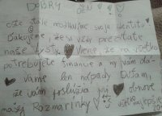
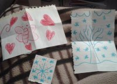

Schránka dôvery
... a naše reakcie na Vaše lístky vhodené do schránky
... najnovšie príspevky
10.10.2018
Dobrý deň
Mohli by ste nám pomôcť so bzdochami? Nejakým spôsobom odstrániť? Nedá sa to tu vydržať a prosíme o nové okná, je tu zima.
Ďalší októbrový list:
Dobrý deň
Ďakujeme a vážime si naše plastové nepriepustné okná, ktoré nám držia krásnych 10 stupňov Celzia, taktiež si vážime ak sa niekto čuduje, že nám je zima, veľmi sa tešíme lebo úžasne sa nám bude mrznúť 5 mesiacov na drevených stoličkách v 5 stupňoch. Ďakujeme za úžasné podmienky a prostredie pre vzdelávanie.
Naše odpovede:
List č. 1:
Samozrejme, všimli sme si, že sa tento druh hmyzu premnožil.. Momentálne je ho všade veľa – v bytoch, domoch, dokonca sa snaží zasadnúť aj do školských lavíc. Pravdupovediac, niet sa ani čomu čudovať – je to dôsledok teplého leta a radikálnych výkyvov počasia.
Jasné, že nám nie je najpríjemnejší pohľad na „votrelca“ lezúceho po stene. Je však neškodný...Nevie sa proste rozhodnúť, tak ako my ráno....Už je september, dám si tričko alebo mikinu? Je mi zima alebo teplo?
Určite však príde aj chladnejšie počasie a naše milé bzdochy sa upokoja. Zvedavcom, ktorí sa chcú o bzdochách, ich správaní a vplyve na človeka dozvedieť viac, odporúčam skonzultovať túto problematiku s pánom učiteľom Tóthom alebo s Matúšom zo 7.A.
PS: Čo sa týka okien...okná môžeme vymeniť len v prípade, že na to máme peniaze. Momentálne sme vedeli vymeniť 21 okien...V budúcnosti však plánujeme ďalšiu výmenu.
List č. 2:
Veľmi si vážime Váš list. Bol iný, jedinečný, ale to určite viete alebo vieš.
10 stupňov? Keby sme mali teplomery v triedach, tak by sme si mysleli, že sú pokazené, pokiaľ by ukazovali takéto číslo.
Ale možno je aj teplota relatívna...inak ju cítime, keď máme v septembri oblečené tričko s dlhým rukávom alebo tričko, z ktorého vykúka pupok.
Takže šup-šup sa obliecť primerane podľa mesiaca v roku, lebo podľa Tvojich predpovedí sa môže 5 stupňov v týchto slnečných dňoch raz-dva zmeniť na mínusové teploty a potom nás už nezachráni ani šál na jar či plavky v zime...
PS: Poprosíme o spätnú fotodokumentáciu nameraných hodnôt a následne budeme vzniknuté nedostatky riešiť. Rozhodne nedopustíme, aby nám tu niekto zamrzol.
28.2.2018
Vo februári sa objavil v schránke dôvery veľmi zaujímavý list:
Ahoj Oskar!
Už dlho ťa sledujem a som ti to aj chcela povedať. Ale nechodíš až tak veľa do školy. Už od dávna sa mi páčiš len som ti to nevedela ako povedať.
Od tvojej „N“
Nuž, je to veľmi milé, že sa aj takýto druh listu ocitol v schránke dôvery. Milá neznáma, sme nesmierne radi, že sme ti takýmto spôsobom splnili túžbu neznámeho Oskara osloviť. Veríme, že si to prečíta a tvoje slová ho príjemne prekvapia a potešia :)
Ďalší februárový list:
Ja chcem zmeniť v škole lavice, stoličky, počítače, dvere – lebo sa ťažko otvárajú ale iba niektoré.
Naša odpoveď:
Bohužiaľ, materiálne veci sa nezaobídu bez peňazí, ktoré sú na to určené. Potom by sa dalo hovoriť o nových laviciach, stoličkách, počítačoch...Otázkou je, prečo sa vám niektoré lavice, stoličky či dvere zdajú byť opotrebované? Jedna vec je stále si kupovať nové veci a druhá, správať sa k tým, čo okolo seba máme tak, aby nám dobre slúžili a dlho vydržali. Keby vedeli niektoré lavice či stoličky rozprávať, vyrozprávali by možno príbeh o neposednom žiakovi, ktorý si ich pomýlil s výkresom či s boxovacím vrecom. Veci si treba vážiť. My vieme, že slovo chcem je prejavom túžby po niečom lepšom. My teda chceme, aby ste pochopili, že školské zariadenie (dvere, lavice, stoličky, počítače...) má svoju životnosť, no ste to práve vy kto sa môže postarať o to, aby vydržali čo najdlhšie. Keď škola nebude musieť platiť za mnohé opravy, bude mať viac peňazí na nákup nového, kvalitnejšieho a ešte modernejšieho zariadenia. Želáme si to všetci.
23.10.2017
Milá pani r.,
mohol by si pán školník upratovať psie výkali. Stále do nich šlapeme. FÚJ!!!
Naša odpoveď:
Milý žiak/ žiačka,
pán školník výkaly po našich psích slečnách upratuje. Zrejme sa stane, že kvôli veľkému areálu školy niektorý prehliadne, preto slovíčko STÁLE asi nie je úplne presné. Rôzni ľudia majú k zvieratkám rôzny vzťah, no a na Rozmarínke sú vždy vítané. Som presvedčená, že aj Tebe sa to páči. A hoci naša Corina a Naďa nevedia používať splachovací záchod, sme radi, že ich máme. Je predsa úžasné, že sa tu cítia ako doma a aj svoju prácu zvládajú bravúrne – strážia areál školy. Pán školník sa o ne stará vzorovo (tým myslíme aj zbieranie psích výkalov) a asi by sme nechceli vidieť smutné oči psíkov pozerajúcich sa cez mreže na veľký školský dvor, po ktorom by sa nemohli vybehať a byť ľúbené. Ak by sme chceli zabezpečiť dôslednú kontrolu ich hygienických návykov, boli by o tento voľný pohyb ukrátené.
Možno sa skús so svojimi kamarátmi zamyslieť nad možnosťou pomôcť. Nakoľko to nie sú psy pána školníka, ale nás všetkých, navrhujeme riešenie: Vedeli by ste dobrovoľne priložiť ruku k dielu? Napríklad v podobe žiackych hliadok – ráno prejsť areál a skontrolovať ho? Prípadne takúto aktivitu vykonávať v školskej družine? Ak označíte zašpinené miesta alebo ich budete chcieť upratať, pani vychovávateľka aj pán školník Vám radi pomôžu. Veľmi nás všetkých poteší, keď sa slová zmenia aspoň na čiastočné skutky.
Ďakujem za príspevok :)
20.10.2017
Milá pani riaditeľka,
chceme vám oznámiť nespravedlnosť pri vybýjanej štvrtákov.
Od: ?Identita je tajná?
Milá pani r., prečo nemôžeme mať na voľnej strane na dvore preliezky, hojdačky a podobné veci!
Naša odpoveď:
Bohužiaľ, na prvý prípad (nespravodlivosť pri vybíjanej) sa nám ťažko reaguje, pretože nepoznáme okolnosti problému. Schránka dôvery podporuje anonymitu príspevkov, ale v takýchto prípadoch by bolo možno fajn byť konkrétnejší – napísať konkrétne v čom tkvie nespravodlivosť, prípadne sa podpísať, aby sme mohli vzniknutú situáciu riešiť individuálne.
Poznámka: 25.10. sa v schránke objavil list, ktorý nás veľmi potešil – je reakciou na predchádzajúci. Žiačky zo 4. B v ňom všetko vysvetlili a čo nás teší najviac – dokázali problém vyriešiť samostatne v spolupráci s triednou učiteľkou.
Druhý príspevok radíme do dobrých nápadov, ktoré sú realizovateľné postupne...vzhľadom k finančným možnostiam školy. Veci, o ktorých píšeš, sú realizovateľné, sú však aj náročné na realizáciu vzhľadom k bezpečnosti na školskom dvore. Podobné projekty sa v škole riešia, všetko však potrebuje svoj čas.
18.10.2017
Milá pani riaditeľka,
Už dávno som Vám chcela napísať. Môj dôvod, prečo sem píšem je, že: Dostala som nápad, ktorý by sa mohol zrealizovať.
Môj nápad znie: Vymaľovať plot.
Prečo?
Keď okolo našej školy chodia deti, pozrú sa a naspäť otočia. No keď to teda bude, tak sa deti pozrú a otvoria sa im ústa dokorán. Tak...to by bol asi koniec.
S pozdravom žiačka zo 4. B.
Naša odpoveď:
Milá žiačka,
Tvoj nápad sa nám veľmi páči. Sme radi, že si všímavá a uvažuješ v prospech našej školy. Určite poznáš príslovie Šaty robia človeka, pretože si veľmi správne pochopila, že ľudia mnohokrát posudzujú iných ľudí v prvom momente podľa zovňajšku. Táto pravda však potvrdzuje aj to, že vhodné šaty môžu dodávať človeku dôstojnosť, vážnosť, rešpekt a ten si zaslúži aj naša škola. Preto si vieme predstaviť, že nové „šaty“ v podobe novej farby by mohol náš plot dostať práve v čase BRIGÁDY, ktorá sa koná v apríli, v rámci Zelenej vlny Rozmarínky.
Ďakujeme za nápad :)
9.10.2017
Milá pani riaditeľka!!!
Chceli by sme vás informovať o nedostatkoch na dievčenských štvrtáckych toaletách: opraviť posledný záchod, zapnúť kúrenie – radiátor, vymaľovať.
Otázka
Nemohla by každá trieda mať vlastný TRIEDNY SVIATOK?
Naša odpoveď:
Milí žiaci!
Sme veľmi radi, že si všímate prostredie, v ktorom trávite svoj čas. Všetky prípadné materiálne nedostatky riešime v spolupráci s pánom školníkom, ktorý o tomto nedostatku vie a má byť riešený v čase, kedy mu príde na pomoc ďalší odborník. To je aj dôvod, prečo je posledná toaleta v rámci dievčenských toaliet zamknutá. Pán školník bol len ostražitý a dočasne túto toaletu zamkol, aby tak predchádzal vážnejšiemu poškodeniu.
Čo sa týka Vašej otázky na zavedenie triedneho sviatku, hodnotíme ju ako výborný nápad, ktorý ste predložili Žiackemu parlamentu. Sme veľmi radi, že máte potrebu realizovať vo Vašej triede niečo výnimočné. Sviatok – či už sú to narodeniny, meniny alebo sviatok Vianoc vyvoláva u každého človeka niečo emočné, hodné povšimnutia. Budeme veľmi radi, ak „triedne sviatkovanie“ začnete realizovať vo Vašej triede a my (v Žiackom parlamente) budeme môcť o Vašich novinkách hovoriť a rozvíjať ich aj ďalej v ostatných triedach. Nezabudnite sa však pochváliť, ako napredujete.
27.9.2017
Milá pani riaditeľka!!!
Mohli by ste prosím dovoliť mobilné telefóny a WI-FI? Ďakujeme
Od: ???
Naša odpoveď:
Milí neznámi!
Po prečítaní Vašej prosby sme ostali milo prekvapení, že slovíčka: mohli by ste, prosím či ďakujem Vám nie sú cudzie, a preto sa na tento list odpovedá veľmi dobre. Tušíme, že bude adresovaný rozumným a vyspelým žiakom.
Chápeme, že moderná doba, ktorej súčasťou je aj mobilný telefón, nás posúva dopredu a využívanie internetu je už takmer samozrejmosťou. Viete si predstaviť, aký by bol svet bez mobilov? Asi chaotický... Sme totiž zvyknutí na to, že sa s každým vieme spojiť prostredníctvom mobilného telefónu, prípadne internetu... veľmi rýchlo... hoci neosobne.
Možno si to ešte teraz neuvedomujete, ale čas, ktorý strávite v spoločnosti spolužiakov, kamarátov, učiteľov, sa opakovať nebude. Preto by bola škoda, keby ste čas strávený v škole premrhali sledovaním správ, surfovaním po internete na mobile. Vedomosti, nové poznatky z hodín, pocity, zážitky a všetko to, čo vo Vás vyvolalo nejakú emóciu, si uložte. Mobilný telefón či internet k tomu nepotrebujete. Následne tú správu pošlite ďalej... Nepotrebujete mobil... stačí sa pozrieť okolo seba. Obyčajný rozhovor, očný kontakt, úsmev vo Vás zanechá viac ako telefonický hovor, sms-ka či v čete.
A v prípade, že budete musieť súrne použiť mobil – veľmi dobre viete, že stačí osloviť hociktorého vyučujúceho a vysvetliť mu dôvod použitia. Dohoda je vždy možná. Stačí málo – napríklad povedať slová, ktoré ste vo Vašom liste už napísali.
Milá Pani riaditeľka,
radi by sme na obede dostávali viacej jedla, nedávať do rybacej polievky hrášok, vylepšiť polievky, a keď sa dá, tak tácky a nepresoľovať polievky, ale trošku áno. Dodržiavať hygienu na stoloch, príboroch a tanieroch. A poprosíme vás, aby keď niekto niečo rozbil, aby na obede netlieskali.
Naša odpoveď:
Milá pisateľka, milý pisateľ,
ďakujeme za nové postrehy v schránke dôvery. Nuž, školská jedáleň je veľmi obľúbenou témou, ktorá sa už neraz objavila v schránke dôvery, preto sa vyjadríme k niektorým veciam, ktoré ešte neodzneli a odpovede na ostatné otázky/dotazy si viete nájsť v archíve našich reakcií (väčšie porcie jedál a tácky v školskej jedálni).
Čo sa týka vylepšenia polievok, musíme si povedať, že nám nikdy nijaká polievka nebude chutiť tak, ako ju pripravuje naša maminka alebo babka. Aj ja chodím na školské obedy, priznám sa, mne naozaj chutí, ale aj ja mám neobľúbené jedlá, ktoré by som si doma nenavarila a v škole ich teda nezjem s takou chuťou ako tie ostatné. Nemôžem však podľa svojich chuťových buniek nadiktovať pani kuchárkam, čo majú variť. Ja síce nezjem špenát, no ďalších dvesto žiakov sa teší vždy, keď špenát na obed máme. Čo sa týka tej rybacej polievky, mne tam skôr prekážala tá ryba ako ten hrášok, lebo ja mám hráškovú polievku oveľa radšej. Hrášok je zdravý a môžem len pochváliť pani kuchárky, že experimentujú s chuťami. Ak však postrehli, že tá polievka sa neminula tak, ako sú zvyknutí, tak určite rybaciu polievku s hráškom viac nenavaria. Môžem Vám zaručiť, že sa pani kuchárky každý deň maximálne snažia, aby nám navarili čo najchutnejší obed – môže sa stať, že to niekedy nevyjde, je to presne ako s písomkou napríklad z matematiky. Snažíte sa napísať ju najlepšie, urobíte preto všetko, ale niekedy to na tú jednotku skrátka nie je. A ak sa Vám zdá, že je niektorá polievka presolená (i keď som počula od žiakov aj ohlasy, že by mali soliť viac), tak sa na to skúsme pozrieť pozitívne – pani kuchárka, ktorá tú polievku solila, je asi zaľúbená, a to je vždy veľmi dobrá správa...
Hygienu na stoloch majú na starosti žiaci, ktorí sa pri tom stole už najedli. Ak prídete k stolu, ktorý je niečím obliaty, treba na to upozorniť pani vychovávateľku, ktorá približne vie, ktoré triedy sa stravujú pred vami a ona následne upozorní kolegyňu, aby dohliadla na žiakov, ktorí neporiadok po sebe nechávajú. Pani kuchárky sa o čistotu na stoloch postarajú vždy na konci dňa, keď sa každý žiak odstravoval. Čo sa týka tanierov a príborov – ak natrafíte na tanier/príbor, ktorý sa Vám nezdá byť čistý, jednoducho ho odneste a vezmite si nový. Pri takom množstve a tempe, ako umývačka riadu pracuje od 12:00 do 14:00 sa môže stať, že sa do obehu dostane riad, ktorý nebol stopercentne umytý.
No a tlieskanie v prípade rozbitia niečoho, nuž, to svedčí o charaktere človeka, ktorý tlieska – pravdepodobne je to niekto, komu sa to stáva bežne a potleskom vyjadrí radosť z toho, že sa to teraz nestalo práve jemu. Verte mi, ak sa to stane nabudúce jemu a niekto mu zatlieska, pochopí, aké je to nepríjemné a viac to robiť nebude. Keby sme na vstupné dvere do jedálne napísali „tlieskať zakázané“, zbytočne by sme na to upozornili a tlieskal by už aj ten, komu to pred tým nenapadlo. Ak si však všimnete, kto zvykne na nepríjemnú situáciu reagovať potleskom, nič s tým nepokazíte, ak za ním pôjdete a priateľsky mu vysvetlíte, aké je to nepríjemné – verte mi, pochopí to, len mu to doteraz ešte asi nikto nepovedal.
Milé Rozmarínčatá, v decembri sme našli v schránke nasledovné listy. Keďže sa vaše nápady a návrhy dosť podobajú, odpovedáme na ne spoločne... Okrem týchto listov sme našli aj milé a povzbudivé slová a kresby, za ktoré vám ďakujeme! (prikladáme fotky)
Dobrý deň!
Prosili by sme si: tácky, zábradlie na schody (na terase). Ešte okná na 2. poschodie a ak sa dá, tak aj na 3 poschodie. Ďakujem.
Dobrý deň!
Prosili by sme plastové okná na 2. a 3. poschodie. A ešte nové lavice a podlahy ako u nulťákov a prvákov. Ďakujem. 5.B
Dobrý deň!
Prosili by sme nové lavice do 5.B, lebo sa veľmi hýbu a náš sused nevie pokojne písať. A ešte sa hrbolato píše. Ďakujem.
Dobrý deň!
Mohlo by sa v triedach tiež urobiť plastové okná, lebo na 2. poschodí je tiež veľmi zima. A to je len začiatok novembra!! Keby sa dalo, tak mňa napadlo, že by sa tiež mohlo rozmýšľať aj o tom, či by sa aj v iných triedach nespravila podlaha ako u nulťákov a prvákov. Ďakujem!
Odpovede na listy:
1. Tácky – o táckach sme sa už zmienili v októbrových odpovediach. Ak si prečítate staršie listy, určite tam odpoveď nájdete.
2. Zábradlie k schodom na terase – s týmto nápadom sa stretávame prvýkrát, zatiaľ neodznel ani na zasadnutiach Žiackeho parlamentu. Určite sa nad ním zamyslíme, zistíme, či by to vyhovovalo väčšine z nás a ak áno, budeme hľadať spôsob, ako by sa to dalo zrealizovať tak, že nás to veľa nebude stáť (napríklad aj pomocou žiakov a rodičov počas jarnej brigády). Skvelý postreh! Možno máš aj predstavu ako by to mohlo vyzerať. Podeľ sa s nami o ňu, prípadne navrhni spôsob, ako by sa dalo niečo takéto postaviť za málo peňazí. Je pekné, že máme v škole všímavých a tvorivých žiakov.
3. Okná na 2. a 3. poschodie – okná sú večne diskutovaná téma aj medzi učiteľmi, rodičmi a členmi Žiackeho parlamentu Rozmarínky. Žiaľ, škola v súčasnosti nemá peniažky na to, aby vymenila okná na ďalších dvoch poschodiach, dokonca niekoľko rokov čakala aj na výmenu okien na prízemí a prvom poschodí. Veríme, že postupne sa nám podarí získať nejaké financie aj na to, aby sme žiakom vedeli vyhovieť aj v tejto oblasti.
4. Nové lavice – aj napriek tomu, že sa v škole už začalo s obnovou nábytku, konkrétne školských lavíc, žiaľ, nedá sa to všetko urobiť naraz. Začali sme ich vymieňať pred dvomi rokmi u našich najmladších, (prváci, druháci a nulťáci), po nich si ich „užijú“ aj ďalší žiaci, ktorí do našej školy prídu. Takýmto spôsobom vie mať nové lavice viac žiakov, aj keď len na kratší čas. Samozrejme, v budúcom roku plánujeme v týchto výmenách pokračovať. Ako rýchlo nám to pôjde tiež závisí od toho, koľko na to budeme mať peňazí. No ak sa ti lavica hýbe alebo inak nie je v poriadku, nahlás to svojmu triednemu učiteľovi a on dohodne s pánom školníkom jej opravu alebo výmenu. Netreba zabúdať ani na to, že žiaci na druhom stupni majú nový nábytok v odborných učebniach, ktoré navštevujú niekoľkokrát týždenne, kým naši najmenší do týchto učební (fyzika, chémia, technika) chodia len výnimočne. Takto má každý niečo nové k dispozícii, i keď nie natrvalo.
5. Nové podlahy – výmena podláh sa začala tiež u našich najmladších, keďže vo svojej triede trávia najviac času – nepresúvajú sa do odborných učební a aj školský klub má priestory v daných triedach. No aby ste vedeli, že nám záleží na tom, aby si niektoré nové veci v triedach užili pred odchodom aj starší žiaci, v blízkom čase budú vymenené PVC podlahy aj v niektorých triedach na 2. poschodí. A ktoré to budú? Nechajte sa prekvapiť. Len pozor, aby bola trieda krásna a útulná, na to nestačí vymeniť podlahu a nábytok...čo je k tomu ešte potrebné, budete musieť vymyslieť sami. Aj my sa necháme prekvapiť.
Dobrý deň! Zachovávame svoju identitu! Prosili by sme, aby k rizotu dávali syr aj k špagetám. Aby boli ku hocijakým jogurtom umelohmotné lyžičky. Prajeme pekný deň!
Ďakujeme za postreh, vidíme, že vnímaš svoje okolie, tvoje nápady sú super. Musíme však upozorniť na fakt, že každý obed je prispôsobený k tomu, kto koľko za obed platí. Ak syr k špagetám a rizotu nedostávaš, tak je to preto, lebo ho nemáš započítaný v cene obeda. Keď vidíš, že učitelia syr dostávajú, tak je to preto, lebo platia za obedy viac. Čo sa týka umelohmotných lyžičiek, prečo nie? Spravíme si kompromis, zabezpečíme ich do školskej družiny. Takže jogurt si budete môcť zjesť ako olovrant v družine. Kto do družiny nechodí, ten ide aj tak domov a jogurt si zje doma.
Do schránky sme dostali aj takýto milý odkaz. Krásna kresba oka so srdiečkom. Ďakujeme
Potešila nás aj ďalšia kresba. Sme radi, že postupne objavujete schránku dôvery
Milá pani riaditeľka alebo kto to číta! Odkazujeme vám že ... Prosili by sme si malé lyžičky na joghurty. Ďakujeme!
Ďakujeme za odkaz, vidíme, že rozmýšľaš podobne ako pisateľ, ktorému sme odpovedali v liste pred tým. Keď si ho prečítaš, dozvieš sa odpoveď.
Dobrý deň!
Chceli by sme do každej triedy nejakého živého tvora, ako napríklad je Elsa v 5.B.
Elza je jednoznačne miláčikom našej školy, nezabudnime však ani na Naďu – vlčiaka, ktorý po nociach stráži našu Rozmarínku. V každom prípade, mať svojho miláčika chce skoro každé dieťa. Niektorým sa to podarilo a doma majú rybky, morča, škrečkov, psa či mačku. Predpokladáme, že doma sa o nich aj musíte postarať. Nie je tomu inak ani v súvislosti s našou Elzou. Ono to nie je tak, že Elza tu len tak je a žiaci si ju užijú, na prestávkach sa s ňou hrajú a potom idú po vyučovaní domov. O Elzu je nutné starať sa. Nerobí to však mama, otec ani starší brat, robia to vybraní žiaci, triedny pán učiteľ a dokonca aj pán školník počas víkendov a prázdnin. Zodpovednosť za to, aby sa u nás Elza mala dobre, prebrali niektorí vaši spolužiaci. Pôvodne Elza trávila čas v triede, no keďže niektorí žiaci boli hluční, museli ju premiestniť do kabinetu pána učiteľa. Tak sa zamyslite – vedeli by ste zabezpečiť to, aby sa každý jeden váš spolužiak k tomu zvieratku správal tak, aby sa u vás cítilo dobre? Poprosili sme pána učiteľa, aby sa nám vyjadril k starostlivosti o Elzu:
„Starám sa o ňu spoločne so školníkom. U neho je cez víkendy a prázdniny. V piatok ju vždy vyčistím, nakŕmim a zoberiem ju do zborovne, odkiaľ si ju berie školník a vracia mi ju vždy v pondelok. Čistím ju 2 x týždenne - piatok a buď pondelok, alebo utorok podľa potreby, pomáhajú mi s tým Sylvia a Dominika. Dominika jej nosí aj seno od deda, Veronika jej nosí šupiny z uhorky aj Terezka občas pomáha. Čo sa týka nákupu, tak zrno jej vydrží dosť dlho, to kupujem tak raz za mesiac, zeleninu kupujem v pondelok vždy šalátovú uhorku, lebo to miluje (môžem jej dať hocičo, ak tam má uhorku, prvé si zoberie vždy to) potom mrkvu, kaleráb zvyknem. Snažím sa takú zeleninu, ktorá má listy. Teraz už aj trávu dostáva. Investovať musíme aj do pilín.“ Aj žiaci si uvedomujú, že sa o ňu musia zodpovedne starať, práve preto to už niektorí vzdali. Tak sa zamyslite – zvládli by ste starostlivosť o nejaké zvieratko? Nebolo by preň trestom byť vo vašej triede? Kupovali by ste mu jedlo? Chodili by ste s ním k zverolekárovi? Čistili by ste mu priestor, kde sa zdržiava? Ak áno, navrhnite presný rozpis, kto by vo vašej triede mal byť za čo zodpovedný, hoďte nám ho do schránky a uvidíme, čo môžeme spraviť.
Dobrý deň!
Prepáčte, ale na WC na 1. poschodí a na prízemí nebolo v stroji na papier nič. Zmrzli nám ruky a mydlo tiež nebolo.
Dobrý deň!
11.4.2016 nebol na záchode papier a ani mydlo. A na záchodoch je prach a pavučiny.
Dobrý deň!
Prepáčte, ale na WC je prach a pavučiny. Priali by sme si, aby tam nebol ani prach, ani pavučiny. Dňa 11.4. na záchodoch nebol papier a mrzli nám ruky od studenej vody. A to konkrétne na prízemí a 1. poschodí. Ďakujeme za pochopenie.
Ďakujeme za upozornenie, na dopĺňanie papiera a mydla sa snažíme dozerať. Keďže však pani upratovačky majú v priebehu dňa aj iné povinnosti, nestíhajú toalety skontrolovať každú prestávku, preto sa stane, že sa mydlo a papier minú práve v čase, keď robia niečo iné. Nás to na jednej strane teší, lebo to znamená, že si poctivo umývate a utierate ruky! V prípade, ak sa takáto situácia bude opakovať, chceli by sme vás poprosiť o spoluprácu. Akonáhle si to všimnete, upozornite triednu učiteľku, ktorá na tento nedostatok upozorní pána školníka, prípadne pani upratovačku, následne bude všetko doplnené. O prach a pavučiny sme sa už postarali.
Dobrý deň!
Chceli by sme, aby ste povolili mobily. Nikto nikdy nevie, kedy ho bude potrebovať.
Jednoznačne súhlasíme s vyhlásením, že „nikto nikdy nevie, kedy mobil bude potrebovať“. No veríme, že ak bez mobilu dokázali deti žiť šťastný a plnohodnotný život tisícročia pred nami, tak asi nie je nevyhnutnou súčasťou života natoľko, že je náročné vzdať sa ho na pár hodín v škole. V škole sa predovšetkým vzdelávate, trávite tu čas so svojimi spolužiakmi a učiteľmi, nevieme si predstaviť, kto by vám práve v tomto čase mal volať. Ak by vás však niekto naozaj potreboval zastihnúť, určite sa mu to podarí na telefónnom čísle, na ktorom bežne zastihnete pani tajomníčku. Ak potrebujete súrne volať vy, nie je problém – veď v školskom poriadku uvádzame, že ak potrebujete súrne zatelefonovať, stačí, ak oslovíte hociktorého vyučujúceho, ktorého stretnete, prípadne pani tajomníčku, ktorú väčšinou zastihnete v kancelárii a spýtate sa, či môžete zavolať, prípadne ten hovor odôvodníte. Myslíme tým to, že ak si chcete objednať pizzu počas vyučovania, tak vám telefonovať nedovolia, čo je, verím, pochopiteľné. Nevieme, na čo iné by ste ešte mobil počas vyučovania potrebovali, no predstavte si to, že ak by sme jeho používanie povolili, tak by často pípal aj počas hodín, ktoré máte možno práve vy najradšej. Nebolo by to rušivé? Určite áno.
Ďakujeme za vaše odpovede. Vážime si to, že poštu čítate.
Aj tento list čakal v schránke dôvery na prečítanie... My ďakujeme, že sledujete svoje okolie a pomáhate nám spríjemňovať váš pobyt v škole. Zíde sa nám každá rada, nápad či postreh. Mimoriadne nás potešilo, že naše snaženie o riešenie vašich problémov nezostáva bez odozvy. Takto aspoň máme istotu, že to všetko má zmysel.
A teraz 3 podobné listy:
Nechcel som ísť na Freestyle show preto, lebo ma to nezaujíma. Nechcel som ísť na to.
Prečo musím platiť za nepovinnú show, na ktorú nechcem ísť. Anonym
Preto som nezaplatila na Freestyle show, lebo ma to nebaví. A prečo by som musela platiť za to, čo ma nebaví? Radšej za to kúpim čokoládu pre môjho brata. Prečo na Pohraničnej mohli mať basketbalistov?
Je nám ľúto, ak sa k vám dostala informácia, že musíte platiť za niečo, čo vás nebaví. My sme boli informovaní, že niektorí žiaci na show nešli, takže ste si presadili svoj názor. V škole je vás naozaj veľa a pre nás je skutočne náročné, dokonca úplne nemožné, vyhovieť každému jednému. Snažíme sa o rôznorodosť ponúknutých programov, chceli sme vyskúšať niečo, čo tu ešte nebolo a našťastie máme naozaj pozitívnu spätnú väzbu. Ak ste pociťovali akési naliehanie, že sa musíte zúčastniť, tak to mohlo byť z dôvodu, že vaši vyučujúci chceli, aby ste vlastne zistili, či vás takéto niečo naozaj nebaví. Je to trošku aj o kompromisoch. Dajme tomu, že by sa zavolali basketbalisti. Predstavte si, že 200 žiakov by vyhlásilo, že ich vlastne basketbal nebaví. Oplatilo by sa basketbalistom prísť pre zvyšných 150 žiakov? Ako by to bolo – polovica školy sa učí a druhá pozerá basketbal? Dobehnete potom to učivo samostatne? Freestyle show prišli realizovať mladí chlapci až z východu. Pricestovali s trémou, záležalo im na tom, aby vás zaujali. Teraz si predstavte, že by pricestovali a v hľadisku by sedelo 50 detí – ostatní by povedali „mňa to nebaví“. No odkiaľ vieme, či nás niečo baví, ak sme to ešte nevyskúšali? S takýmto prístupom by škola nemohla nič podobné organizovať – žiadne divadelné predstavenia, žiadne športové akcie, žiadne výchovné koncerty – veď vždy môže polovica školy vyhlásiť, že ich to nebaví – a my názor každého akceptujeme! Práve tu ide o kompromisy – raz za čas si pozrieť aj niečo, čo nás nebaví (a možno zistíme, že to bolo vlastne fajn), aby sa inokedy mohlo realizovať niečo, čo baví práve mňa a ostatní sa budú prispôsobovať. Koniec koncov, všetko dobre dopadlo – koho to bavilo bol tam a veľmi si to pochvaľoval, koho to nebavilo, ten tam zas nebol. Veríme, že v budúcnosti nebudeme musieť úplne obmedziť všetky akcie, ktoré nám ponúknu, a to z dôvodu, že žiaci vopred usúdia, že ich to vlastne nebaví...
Dobrý deň!
Chceli by sme vás poprosiť, či by ste nevedeli urobiť skrinky. V šatni máme veci spolu s chalanmi a nepáči sa nám to.
Dobrý deň!
Chceli by sme skrinky, lebo veľakrát si nájdeme veci na zemi.
Naša škola vyniká práve tým, že skrinky nemáme. Zopár žiakov to vníma ako mínus, väčšina z vás sa tomu teší. Máme veľké šatne s lavičkami a vešiakmi, priestor, v ktorom trávite čas ráno do 7:45 a poobede do 14:00, keď čakáte na krúžok. Je to miesto, kde sedíte ako partia, bavíte sa a niekedy si vysvetľujete učivo. Myslíme si, že mať takýto „kútik“ je výhodnejšie, ako stáť pred skrinkou, ktorú by ste si museli deliť s jedným/dvoma žiakmi, riešiť, komu patrí ktorá polička, kto tam nechal neporiadok, prípadne, kde ste zabudli kľúče, keď v skrinke je projekt, ktorý práve potrebujete. V nižších ročníkoch môže byť problém, že chlapci sú živší a pri hľadaní úboru v tom zmätku niečo zhodia. No nie je lepšie takýto problém hneď vyriešiť a naučiť sa „spolunažívať“ aj s takýmito povahami? Ako inak naučíme vašich spolužiakov poriadku, ak nie upozorňovaním? My vieme, že je to niekedy náročné deliť sa o priestor s ľuďmi, ktorí sa nevedia prispôsobovať – napríklad v udržaní poriadku, je vo vyšších ročníkoch zistíte výhody – žiak, ktorý je možno trošku väčší bordelár, je možno najvtipnejší z triedy a čas strávený v šatni je práve vďaka nemu príjemný...
Dobrý deň, pani riaditeľka.
Prosili by sme, aby ste nechali a dovolili len „telefóny“ (na volanie) a nie na hranie a na blbosti. Ďakujeme. A ešte aby ste nedovolili „tablety“ – lebo sa môže poškodiť alebo sa žiaci mohli hrať nevhodné hry.
Milá pani riaditeľka,
Radi by sme vás chceli poprosiť o to, aby ste uvažovali na tom, čo vám píšeme. Máme spolužiakov, ktorí celý deň tabletujú a tlačia telefóny atď... Veď viete, čo tým myslíme. Radi by sme boli, keby ste zakázali tablety a aspoň by sa deti učili a nie tlačili tablet. Ďakujem za pochopenie.
Používanie tabletov, podobne ako aj používanie mobilných telefónov, je podľa školského poriadku zakázané, výnimkou je prípad, ak použitie povolí dospelá osoba, ktorú osloví žiak a odôvodní svoju žiadosť. Ak teda niekto použil tablet, sme presvedčení, že to nebolo z dôvodu, aby sa mohol hrať nevhodné hry, prípadne hraním provokovať ostatných. Ak hovoríme o jednom a tom istom prípade, o ktorom my máme informáciu, tak to použitie bolo odôvodnené. Keďže však neodzneli žiadne mená, potvrdiť to nemôžeme. Aby sme mohli túto záhadu vyriešiť, bolo by super, keby ste nám anonymne vhodili do schránky meno žiaka/žiačky, ktorý/ktorá použil/a tablet. Ďakujeme za spoluprácu.
V schránke dôvery bolo akosi rušno. Pred veľkonočnými prázdninami nám pribudlo zopár listov. Keďže sú si listy obsahovo dosť podobné, uvádzame ich naraz a zároveň odpovedáme na všetky listy spolu.
Znenie listov:
Dobrý deň!
Ja sa volám xxxx a som zo 4.B triedy. Chcela by som na škole zrkadlá na WC nad umývadlami. Ešte by som chcela čistejšie záchody a väčšie porcie jedál pre prvý stupeň. Chcela by som ešte do jedálne tácky. Ďakujem.
Dobrý deň, poprosili by sme, aby ste obnovili záchody, je tam špina, smrad, zima a záchodové dosky sú polámané. Stena je počarbaná a poškrabaná. Chceli by sme čisté záchody, nové kachličky a zámku na dvere.
Dobrý deň!
Prosili by sme si na škole čistejšie záchody a zámok na WC dverách.
Milí vedúci školy!
Prosili by sme si na škole nové a čistejšie záchody a nové lavice a nové stoličky, A chceli by sme ešte väčšie porcie jedál... Ďakujeme.
Naša odpoveď:
Milí žiaci,
veľmi nás teší, že po škole chodíte s otvorenými očami a neváhate upozorniť nás na to, čo práve nefunguje stopercentne. Veríme, že okrem toho, že nás na problémy upozorníte, budete nám aj nápomocní pri ich riešení. Odpovede na Vaše otázky sme si obsahovo rozdelili:
1. Jedáleň
- porcie jedál – veľkosť porcií nie je náhodná. Sú pevne stanovené podľa veku a ceny za obed. Okrem toho by žiaci chceli väčšie porcie len z niektorých jedál. Pani kuchárky majú odsledované, koľko žiaci zjedia a koľko jedla sa nezjedené odnáša späť. Sú jedlá, ktoré majú žiaci veľmi radi (najmä sladké obedy v stredu) a dali by si aj viac buchiet či buchtičiek, no u väčšiny žiakov sa po iné dni jedlo z taniera tak rýchlo nemíňa. Preto sa nedá posúdiť, ktoré dni by mal žiak dostať viac jedla, a ktoré dni menej. Nie sme predsa rovnakí a každému chutí niečo iné... Preto máme dve riešenia: 1. ak poprosíte rodičov, môžu vám zaplatiť jedlo v hodnote, ktoré dostávajú starší žiaci (áno, majú viac jedla na tanieri, no aj viac platia). 2. neraz sa stane, že Vám naša vždy usmiata Veronika dá aj dupľu – stačí sa spýtať...
- tácky – nápad to jednoznačne nie je zlý, vidíme to v rôznych amerických filmoch a seriáloch, akurát, v našej školskej jedálni máme iný systém stravovania. Tácky sú praktické, keď si jedným šupom chceme zobrať polievku, pitie, príbor i druhé (pozor, vyžaduje to zručnosť, nosiť jedlo na tácke zďaleka nie je také jednoduché, najmä, keď sa každý pozerá na ňu a nie pred seba – môže dôjsť k zrážke, to však v amerických filmoch neukážu ). U nás Vám polievku dajú naše pani vychovávateľky, príbor si vezmete jednou cestou, keď prichádzate a vracať sa musíte jedine po druhé... Myslíme si, že pri takomto spôsobe obsluhy by boli pre nás tácky zbytočnou príťažou.
2. Zrkadlo
- nápad veľmi dobrý, jedno zrkadlo na 2. poschodí už máme a sľubujeme, že pouvažujeme na nejakom vhodnom umiestnení zrkadla aj na prvom poschodí, i keď to možno nebudú práve záchody. Sľubujeme, že tento návrh zvážime a pokúsime sa ho čo najskôr zrealizovať.
3. Lavice a stoličky
- s touto prosbou sa úplne stotožňujeme, aj my by sme chceli nové lavice a stoličky, žiaľ, nie je to také jednoduché, aké by sme chceli, aby to bolo. Pracujeme na tom a chceli by sme postupne v triedach meniť poškodené lavice a stoličky, no je to veľmi pomalý proces. Tak, ako si vy šetríte na niečo, čo veľmi chcete, tak to robíme aj mi. Vieme, že veľakrát to netrvá len deň, týždeň či mesiac... V každom prípade, ak máte malé alebo veľké stoličky, prípadne poškodenú lavicu, pán školník má jeden veľký sklad, kde sú lavice aj stoličky na výmenu – nie sú síce nové, no možno sa vám svojou výškou či zachovalosťou budú hodiť viac. Dohodnite sa na triednickej hodine a pani učiteľka triedna s pánom školníkom to budú vedieť zariadiť.
4. toalety
- nové záchody – áno, pochopiteľná prosba, snažíme sa, a aby sme na to získali peniaze, zapájame sa do rôznych projektov, v ktorých sme zatiaľ neuspeli. No keby vám na tom veľmi záležalo, viete sa snažiť s nami. Vždy v septembri je vyhlásená súťaž, ktorú vyhlasuje Domestos – je tam potrebné hlasovať, robiť rôzne aktivity a zbierať bločky z nákupov týchto prípravkov... Žiaľ, ak nespojíme svoje sily, nepodarí sa nám to. Aj vy viete pomôcť – sledujte septembrové nástenky a možno nám to vyjde! Čo sa týka nových kachličiek, žiaľ, na takúto prerábku sú potrebne nemalé peniažky, ktoré škola v súčasnosti nemá. Zatiaľ sa skúsme tešiť z toho, že máme na všetkých záchodoch zabezpečené papierové utierky a tekuté mydlo. Už ani toaletný papier si nemusíte nosiť vlastný z triedy...
- čistota – tu by som chcela poznamenať, že záchody určite čisté sú – máme skvelé pani upratovačky, ktoré sa starajú o čistotu na celej škole! Samozrejme, ak si počas dňa tú čistotu neudržíte (splachovanie záchodov), tak môže byť na záchode aj smrad. Tu si viete navzájom pomôcť len tak, že sa na to budete upozorňovať.
- poškodenie – určite budeme diskutovať s pánom školníkom a prejdeme jednotlivé toalety. Ak nájdeme polámané záchodové dosky, čo najrýchlejšie ich nahradíme. Počarbaná a poškrabaná stena je žiaľ vždy práca niektorých žiakov. Je nám ľúto, že si niekto nájde zábavu v tom, aby nám počmáral steny. Znovu nám viete pomôcť vy – sledujte sa navzájom, ak niekoho uvidíte, upozornite na to hoci aj prostredníctvom schránky dôvery – verte nám, neprejde mu to – škodu bude musieť nahradiť. My však popremýšľame, ako by sme mohli steny nanovo namaľovať.
- zámok – nie je to zlý nápad, no doteraz sa nám to zdalo byť zbytočné. Na záchody chodíte väčšinou vo dvojiciach a jedna druhej si strážite dvere. Nám vždy išlo predovšetkým o vašu bezpečnosť – aby ste sa na záchodoch nezasekli a nespanikárili, prípadne aby nejaký šibal nemal možnosť zamknúť sa tam naschvál, keď sa skrýva pred niekým, lebo niečo vyviedol. Určite však zvážime aspoň nejaké jednoduchšie zámky, prediskutujeme to s pánom školníkom a niečo vymyslíme.


{kind=link}
{kind=link}
{kind=link}
{kind=link}